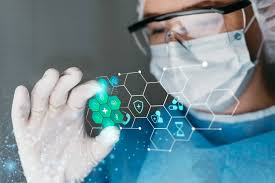

Novas Tecnologias Transformam o Setor de Saúde
Avanços recentes em tecnologias médicas estão revolucionando o setor de saúde, com inovações que vão desde dispositivos de monitoramento remoto até avanços em tratamentos personalizados. Essas mudanças prometem melhorar a qualidade dos cuidados e a eficiência dos tratamentos.
Grandes Descobertas Arqueológicas no Egito
Recentemente, arqueólogos fizeram descobertas impressionantes no Egito, incluindo artefatos antigos e estruturas que lançam nova luz sobre civilizações passadas. Essas descobertas oferecem novas perspectivas sobre a história e a cultura do Antigo Egito.
O Impacto das Mudanças Climáticas nas Cidades Costeiras

As mudanças climáticas estão causando um impacto significativo nas cidades costeiras ao redor do mundo. O aumento do nível do mar e eventos climáticos extremos estão ameaçando a infraestrutura urbana e exigindo estratégias de adaptação e mitigação mais robustas.
Inovações no Setor de Energia Renovável

O setor de energia renovável está se expandindo rapidamente com novas inovações em tecnologias de geração de energia e armazenamento. As recentes melhorias prometem tornar as fontes de energia limpa mais acessíveis e eficientes, ajudando na transição para um futuro sustentável.
Avanços na Inteligência Artificial e Seu Impacto na Indústria

A inteligência artificial está transformando diversos setores, desde a manufatura até os serviços financeiros. As últimas inovações em IA estão aprimorando a automação, a análise de dados e a personalização de serviços, criando novas oportunidades e desafios para as empresas.
Desenvolvimentos Recentes em Viagens Espaciais

O campo das viagens espaciais está em rápida evolução, com novas missões e tecnologias que estão expandindo as possibilidades de exploração e turismo espacial. Os recentes avanços prometem tornar o espaço mais acessível e abrir novas fronteiras para a exploração humana.